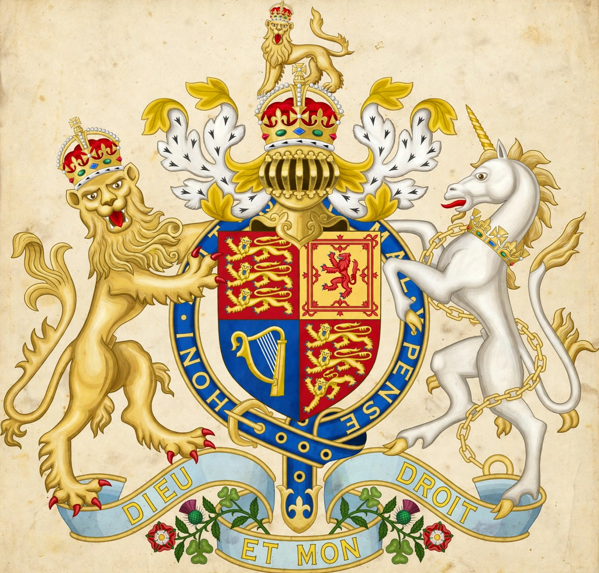

Bribery Act 2010
From Wikipedia, the free encyclopedia
| Bribery Act 2010 | |
|---|---|
 | |
| Parliament | Parliament of the United Kingdom |
| Citation | 2010 c. 23 |
| Royal assent | 8 April 2010 |
| Commencement | 1 July 2011 |
| Status | Current legislation |
The Bribery Act 2010 (c. 23) is an Act of the Parliament of the United Kingdom that covers the criminal law relating to bribery. It is widely described as one of the toughest anti-corruption laws in the world. Introduced after criticism of the UK's outdated bribery laws — some dating to the late 19th and early 20th centuries — and of the handling of the Al-Yamamah arms deal investigation, the Act received royal assent on 8 April 2010 and came into force on 1 July 2011.
Offences
The Act creates four offences:
- Active bribery (section 1) — offering, promising or giving a financial or other advantage intending to induce improper performance of a relevant function or activity.
- Passive bribery (section 2) — requesting, agreeing to receive or accepting such an advantage.
- Bribery of a foreign public official (section 6) — bribing a foreign public official intending to influence them and to obtain or retain business or a business advantage.
- Failure of a commercial organisation to prevent bribery (section 7) — a strict-liability corporate offence where an "associated person" bribes another intending to obtain or retain business or an advantage for the organisation. The organisation has a defence if it had in place "adequate procedures" designed to prevent bribery.
Unlike the U.S. Foreign Corrupt Practices Act, the Act contains no exception for facilitation payments and covers bribery in both the public and private sectors. Its territorial reach is broad: offences committed abroad by persons with a "close connection" to the UK are covered, and section 7 applies to organisations carrying on business in the UK wherever the bribe occurs.
Penalties and enforcement
Individuals face up to 10 years' imprisonment and an unlimited fine; organisations face unlimited fines. The Act is enforced principally by the Serious Fraud Office. The section 7 offence underpins deferred prosecution agreements concluded with companies such as Standard Bank (2015) and Rolls-Royce (2017), the latter resulting in penalties of about £497 million in the UK as part of a global settlement.
Guidance
The Ministry of Justice published guidance organised around six principles: proportionate procedures, top-level commitment, risk assessment, due diligence, communication (including training), and monitoring and review.
See also
This article is a recreation from memory in the style of Wikipedia.